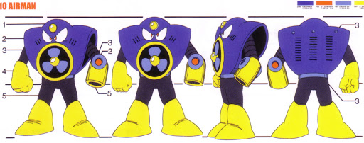

 (エアーマンが倒せない, Eāman ga Taosenai, "Can't Beat Air Man") is a dōjin song and Internet meme from Japan. The song itself describes a player trying to defeat the boss character Air Man (and later in the song Wood Man) in Mega Man 2. Unlike the earlier song "Omoide wa Okkusenman!" which uses a song originally composed for Mega Man 2 as its melody, "Air Man ga Taosenai" is an original composition by an individual only known as "Ceramical Titan" (せらみかるちたん, Seramikaruchitan).
History
The song was first posted on Nico Nico Douga on May 26, 2007.[1] A vocal version performed by dōjin music group Team.Nekokan (Team.ねこかん[猫], Team.Nekokan [Neko]) was later posted to their website and YouTube on June 1, 2007, and later to Nico Nico Douga on July 1.[2] This version was a collaboration with fellow dōjin musicians SoundCYCLONE and Scinicade. An English version titled "Can't Beat Air Man" was originally posted to both Nico Nico Douga and YouTube on December 24, 2007, but are no longer available. "Air Man ga Taosenai" was incorporated into the second of the Kumikyoku Nico Nico Douga videos and has been included in all but one of the subsequent mashups.
Commercial release
Team.Nekokan's version of "Air Man ga Taosenai" was distributed at Comiket on a CD along with an acoustic version of this song. Team.Nekokan's original version and its instrumental are available through the iTunes Store.[3] It is also included on the Nico Nico Douga album CD de Kiite Mite.: Nico Nico Douga Selection (CDで聞いてみて。～ニコニコ動画せれくちょん～, CD de Kiite Mite. ~Niko Niko Dōga Serekuchon~, "Try to Listen to the CD.") released July 9, 2008. A cover version arranged by Ryu* and sung by zaki was released on the CD Exit Trance Presents Umauma Dekiru Trance o Tsukuttemita 4: Goran no Arisama da yo (EXIT TRANCE PRESENTS ウマウマできるトランスを作ってみた 4 ごらんの有様だよ♥) on April 1, 2009.
References
"エアーマンが倒せない （ｶﾗｵｹﾊﾞｰｼﾞｮﾝ）‐ニコニコ動画(9)". 2007-05-26. Retrieved 2010-01-20.
"エアーマンが倒せない（ＴＥＡＭねこかんｖｅｒｓｉｏｎ）‐ニコニコ動画(9)". 2007-07-01. Archived from the original on 7 January 2010. Retrieved 2010-01-20.
"Air Man Ga Taosenai - EP". 2007-09-01. Archived from the original on 19 January 2010. Retrieved 2010-01-20.
"EXIT TUNES / QWCE-00086 EXIT TRANCE PRESENTS ウマウマできるトランスを作ってみた ４ ごらんの有様だよ". Retrieved 2010-02-02.